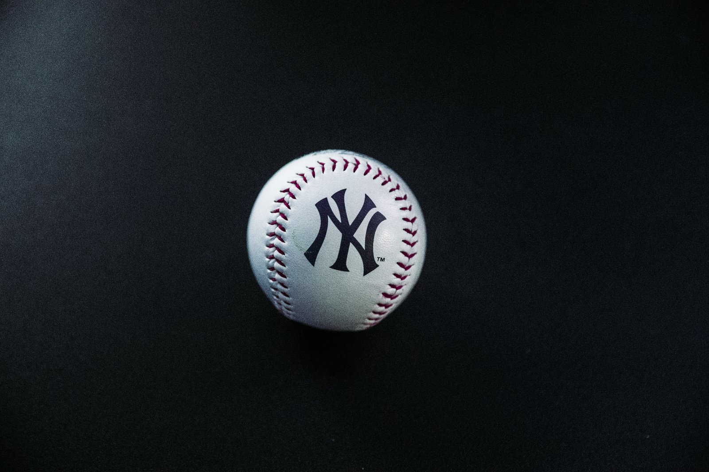

Golf Ball
 Golf is a club-and-ball sport in which players use various clubs to hit balls into a series of holes on a course in as few strokes as possible.
Golf is played for the lowest number of strokes by an individual, known as stroke play, or the lowest score on the most individual holes in a complete round by an individual or team, known as match play.
Stroke play is the most commonly seen format at all levels, but most especially at the elite level.
Stroke play, also known as medal play, is a scoring system in the sport of golf in which the total number of strokes is counted over one, or more rounds, of 18 holes;
as opposed to match play, in which the player, or team, earns a point for each hole in which they have bested their opponents.
In stroke play the winner is the player who has taken the fewest strokes over the course of the round, or rounds.
Golf is a club-and-ball sport in which players use various clubs to hit balls into a series of holes on a course in as few strokes as possible.
Golf is played for the lowest number of strokes by an individual, known as stroke play, or the lowest score on the most individual holes in a complete round by an individual or team, known as match play.
Stroke play is the most commonly seen format at all levels, but most especially at the elite level.
Stroke play, also known as medal play, is a scoring system in the sport of golf in which the total number of strokes is counted over one, or more rounds, of 18 holes;
as opposed to match play, in which the player, or team, earns a point for each hole in which they have bested their opponents.
In stroke play the winner is the player who has taken the fewest strokes over the course of the round, or rounds.
Snooker Ball
 Snooker is a cue sport that is played on a baize-covered table with pockets in each of the four corners and in the middle of each of the long side cushions.
It is played using a cue and snooker balls: one white cue ball, 15 red balls worth one point each (sometimes played with fewer red balls, commonly 6 or 10), and six balls of different colours:
yellow (2 points), green (3), brown (4), blue (5), pink (6), black (7).[1] A player (or team) wins a frame (individual game) of snooker by scoring more points than the opponent(s), using the cue ball to pot the red and coloured balls.
A player (or team) wins a match when they have achieved the best-of score from a pre-determined number of frames. The number of frames is always odd so as to prevent a tie or a draw.
A player (or team) wins a frame (individual game) of snooker by scoring more points than the opponent(s), using the cue ball to pot the red and coloured balls.
Snooker is a cue sport that is played on a baize-covered table with pockets in each of the four corners and in the middle of each of the long side cushions.
It is played using a cue and snooker balls: one white cue ball, 15 red balls worth one point each (sometimes played with fewer red balls, commonly 6 or 10), and six balls of different colours:
yellow (2 points), green (3), brown (4), blue (5), pink (6), black (7).[1] A player (or team) wins a frame (individual game) of snooker by scoring more points than the opponent(s), using the cue ball to pot the red and coloured balls.
A player (or team) wins a match when they have achieved the best-of score from a pre-determined number of frames. The number of frames is always odd so as to prevent a tie or a draw.
A player (or team) wins a frame (individual game) of snooker by scoring more points than the opponent(s), using the cue ball to pot the red and coloured balls.
Tennis Ball
 Tennis is a racket sport that can be played individually against a single opponent (singles) or between two teams of two players each (doubles).
Each player uses a tennis racket that is strung with cord to strike a hollow rubber ball covered with felt over or around a net and into the opponent's court.
Tennis is a racket sport that can be played individually against a single opponent (singles) or between two teams of two players each (doubles).
Each player uses a tennis racket that is strung with cord to strike a hollow rubber ball covered with felt over or around a net and into the opponent's court.
Cricket Ball
 Cricket is a bat-and-ball game played between two teams of eleven players on a field at the centre of which is a 20-metre (22-yard) pitch with a wicket at each end,
each comprising two bails balanced on three stumps. The batting side scores runs by striking the ball bowled at the wicket with the bat, while the bowling and fielding side tries to prevent this and dismiss each player (so they are "out").
Means of dismissal include being bowled, when the ball hits the stumps and dislodges the bails, and by the fielding side catching the ball after it is hit by the bat, but before it hits the ground.
When ten players have been dismissed, the innings ends and the teams swap roles. The game is adjudicated by two umpires, aided by a third umpire and match referee in international matches.
They communicate with two off-field scorers who record the match's statistical information.
Cricket is a bat-and-ball game played between two teams of eleven players on a field at the centre of which is a 20-metre (22-yard) pitch with a wicket at each end,
each comprising two bails balanced on three stumps. The batting side scores runs by striking the ball bowled at the wicket with the bat, while the bowling and fielding side tries to prevent this and dismiss each player (so they are "out").
Means of dismissal include being bowled, when the ball hits the stumps and dislodges the bails, and by the fielding side catching the ball after it is hit by the bat, but before it hits the ground.
When ten players have been dismissed, the innings ends and the teams swap roles. The game is adjudicated by two umpires, aided by a third umpire and match referee in international matches.
They communicate with two off-field scorers who record the match's statistical information.
Baseball
 Baseball is a bat-and-ball game played between two opposing teams who take turns batting and fielding. The game proceeds when a player on the fielding team, called the pitcher, throws a ball which a player on the batting team tries to hit with a bat. The objective of the offensive team (batting team) is to hit the ball into the field of play, allowing its players to run the bases, having them advance counter-clockwise around four bases to score what are called "runs". The objective of the defensive team (fielding team) is to prevent batters from becoming runners, and to prevent runners' advance around the bases. A run is scored when a runner legally advances around the bases in order and touches home plate (the place where the player started as a batter). The team that scores the most runs by the end of the game is the winner.
Field Hockey Ball
Field hockey, also called hockey, outdoor game played by two opposing teams of 11 players each who use sticks curved at the striking end to hit a small, hard ball into their opponent's goal. It is called field hockey to distinguish it from the similar game played on ice. The usual composition of a team is five forwards, three halfbacks, two fullbacks, and a goalkeeper. A game consists of two halves of 35 minutes each, with an intermission of 5–10 minutes. A time-out is called only in case of injury. The goalkeeper wears thick, yet lightweight pads and, while in the shooting circle, is allowed to kick the ball or stop it with the foot or the body. All other players, however, may stop the ball with the stick only.
Handball
 Handball (also known as team handball, European handball or Olympic handball) is a team sport in which two teams of seven players each (six outcourt players and a goalkeeper)
pass a ball using their hands with the aim of throwing it into the goal of the other team.
A standard match consists of two periods of 30 minutes, and the team that scores more goals wins.
Modern handball is played on a court of 40 by 20 metres (131 by 66 ft), with a goal in the middle of each end.
The goals are surrounded by a 6-meter (20 ft) zone where only the defending goalkeeper is allowed; goals must be scored by throwing the ball from outside the zone or while "diving" into it.
Handball (also known as team handball, European handball or Olympic handball) is a team sport in which two teams of seven players each (six outcourt players and a goalkeeper)
pass a ball using their hands with the aim of throwing it into the goal of the other team.
A standard match consists of two periods of 30 minutes, and the team that scores more goals wins.
Modern handball is played on a court of 40 by 20 metres (131 by 66 ft), with a goal in the middle of each end.
The goals are surrounded by a 6-meter (20 ft) zone where only the defending goalkeeper is allowed; goals must be scored by throwing the ball from outside the zone or while "diving" into it.
Volleyball
Volleyball is an Olympic sport in which two teams separated by a high net use their hands, arms, or (rarely) other parts of their bodies to hit a ball back and forth over the net. Each team is allowed three hits to get the ball over the net to the other team. Volleyball can be a very active sport that can be an excellent source for aerobic exercise. It also helps players improve their hand-eye coordination and the ability to override the instinctive desire to dodge a fast-moving object such as a ball.
Bowling
Bowling, the sport of throwing a heavy ball down a lane and knocking over pins, has been around for centuries, and has become one of America's most democratic pastimes. Often referred to as the "great cultural leveler," bowling is affordable, allows for the participation of both genders, all ages, skill levels, and classes, and encourages a social camaraderie rare in other competitive sports. In fact, an instructional book written in 1987 said that "one of the greatest benefits of bowling is the development of friendships."
Foot Ball
 Football, also called association football or soccer,
game in which two teams of 11 players, using any part of their bodies except their hands and arms,
try to maneuver the ball into the opposing team’s goal.
Only the goalkeeper is permitted to handle the ball and may do so only within the penalty area surrounding the goal.
The team that scores more goals wins.Football is the world’s most popular ball game in numbers of participants and spectators.
Football, also called association football or soccer,
game in which two teams of 11 players, using any part of their bodies except their hands and arms,
try to maneuver the ball into the opposing team’s goal.
Only the goalkeeper is permitted to handle the ball and may do so only within the penalty area surrounding the goal.
The team that scores more goals wins.Football is the world’s most popular ball game in numbers of participants and spectators.
Basketball
Basketball is a team sport in which two teams, most commonly of five players each, opposing one another on a rectangular court, compete with the primary objective of shooting a basketball through the defender's hoop (a basket 18 inches) high to a backboard at each end of the court) while preventing the opposing team from shooting through their own hoop. A field goal is worth two points, unless made from behind the three-point line, when it is worth three. After a foul, timed play stops and the player fouled or designated to shoot a technical foul is given one or more one-point free throws. The team with the most points at the end of the game wins, but if regulation play expires with the score tied, an additional period of play (overtime) is mandated.
Rugby Ball
 Rugby is a game in which the object is to carry the ball over the opponents' goal line and force it to the ground to score.
Rugby is a game in which the prime objective is to ground the ball across the goal line to score a try.
In order to do this, a team's players must have possession of the ball. Their opponent's objective is to prevent them from scoring a try.
The object of the game is score more points than your opponents in the 80 minute time frame allotted for each rugby match.
The team with the greater number of points at full time is announced as the winner. Games may end as a draw.
Rugby is a game in which the object is to carry the ball over the opponents' goal line and force it to the ground to score.
Rugby is a game in which the prime objective is to ground the ball across the goal line to score a try.
In order to do this, a team's players must have possession of the ball. Their opponent's objective is to prevent them from scoring a try.
The object of the game is score more points than your opponents in the 80 minute time frame allotted for each rugby match.
The team with the greater number of points at full time is announced as the winner. Games may end as a draw.